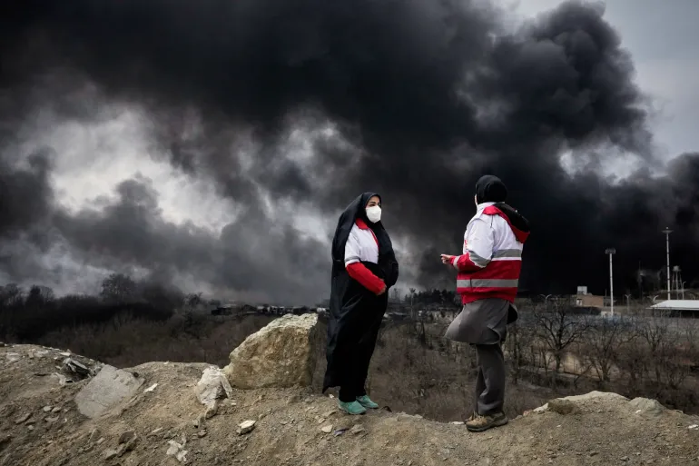
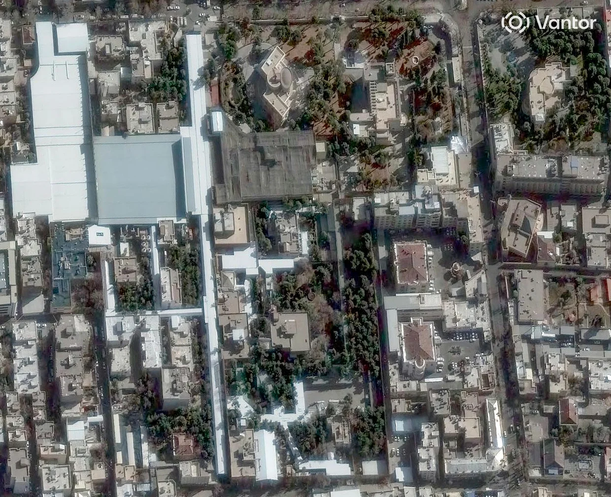
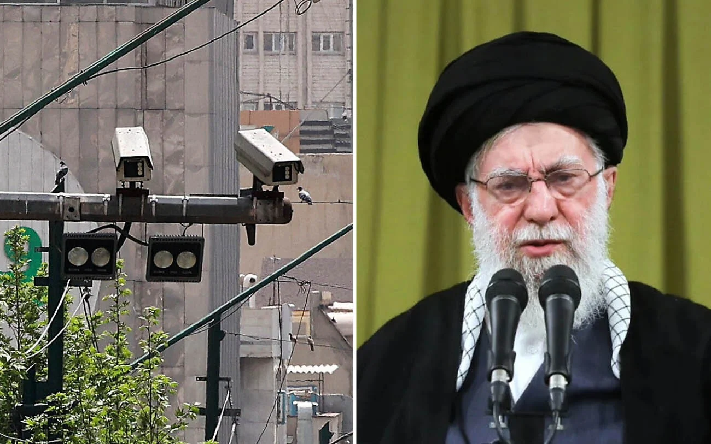
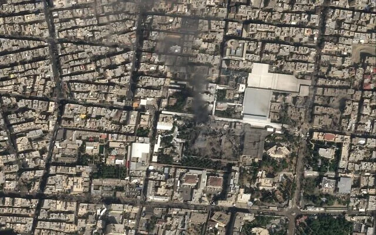
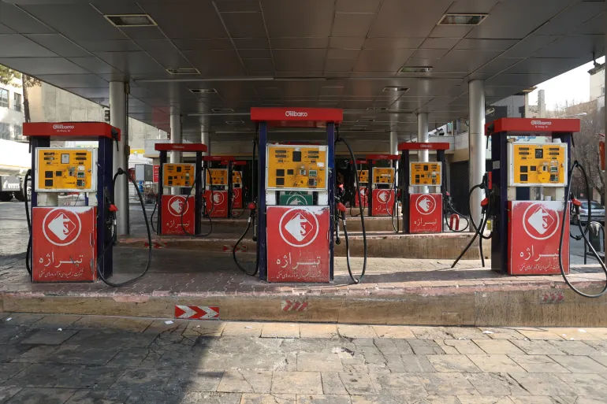
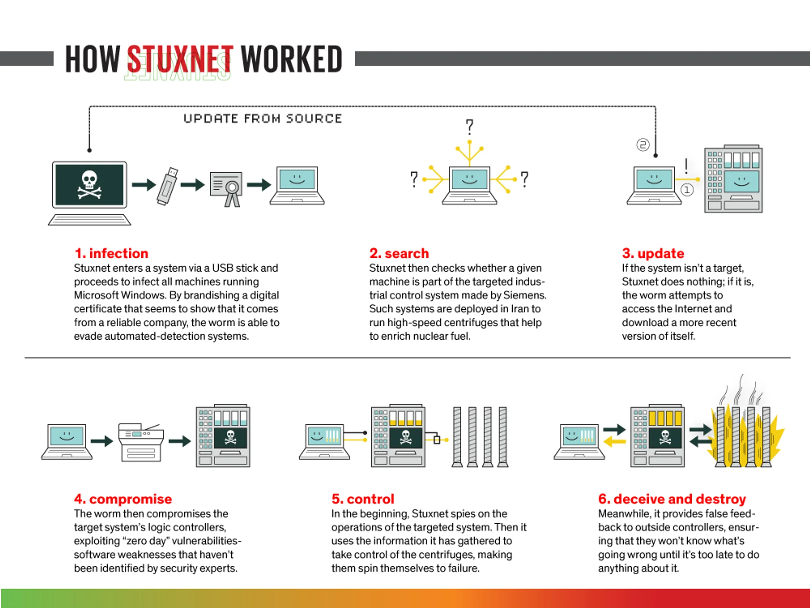
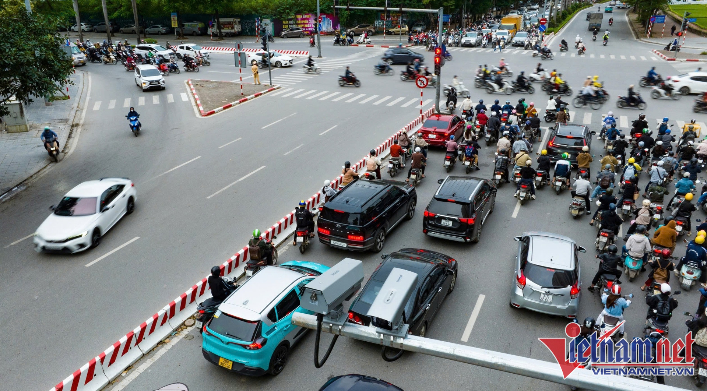

01 Ngày thế giới rung chuyển
Sáng thứ Bảy, ngày 28 tháng 2 năm 2026, Tehran vẫn còn chìm trong sương mù đầu xuân. Không ai lường trước được rằng chỉ trong 12 giờ tiếp theo, gần 900 đợt không kích sẽ giáng xuống khắp lãnh thổ Iran [1]. Đây không phải kiểu ra đòn bốc đồng — mà là cú đấm kết thúc của một ván cờ tình báo đã được chuẩn bị nhiều năm trời, nơi công nghệ hack, trí tuệ nhân tạo, mạng lưới gián điệp, và hỏa lực quân sự cùng hội tụ về một điểm.

Israel đặt tên chiến dịch là Sư Tử Gầm Thét (Operation Roaring Lion). Washington gọi nó là Epic Fury. Nhưng dù tên gọi gì thì mục tiêu ưu tiên số một vẫn chỉ có một: khu phức hợp Leadership House — nơi ở và làm việc của Đại giáo chủ Ali Khamenei, nằm cạnh đường Pasteur ngay giữa lòng Tehran [2].
Kết quả chiến dịch
Ali Khamenei — Lãnh tụ Tối cao Iran, người nắm quyền lực tuyệt đối suốt 37 năm — thiệt mạng. Iran chính thức xác nhận một ngày sau đó [3].
Cùng với ông, Bộ trưởng Quốc phòng Aziz Nasirzadeh và ít nhất 6 quan chức cấp cao khác cũng bị tiêu diệt. IDF tuyên bố tổng cộng 40 chỉ huy cấp cao Iran ngã xuống chỉ trong đợt tấn công mở màn [4].

Nhưng điều thực sự khiến giới tình báo toàn cầu sửng sốt không phải bom đạn — mà là cách Israel đã lặng lẽ biến chính hệ thống giám sát mà Tehran dựng lên để giám sát người dân thành con mắt do thám phục vụ đối phương. Hàng nghìn camera giao thông lẽ ra để bắt người vượt đèn đỏ, cuối cùng lại chỉ điểm cho tên lửa tìm đến đúng phòng ngủ của Lãnh tụ Tối cao [5].
02 Dòng thời gian: Từ xâm nhập đến tiêu diệt

Cái hay — và cũng cái đáng sợ — của câu chuyện này là nó không bắt đầu ngày 28/02/2026. Nó bắt đầu từ nhiều năm trước, khi những dòng code đầu tiên lặng lẽ chảy qua mạng camera Tehran mà không một ai hay biết.


03 Hack Camera Giao Thông Tehran — Chi tiết kỹ thuật
Bây giờ mới đến phần hay nhất — và cũng là phần khiến bất kỳ ai làm về an ninh mạng đều phải giật mình.
Hệ thống camera giám sát của Iran
Từ lâu, Iran đã dựng lên một mạng lưới camera giám sát thuộc hàng dày đặc nhất Trung Đông. Mục đích ban đầu? Theo dõi người bất đồng chính kiến, giám sát biểu tình, kiểm tra phụ nữ có đội hijab hay không. Theo AP, mạng lưới này trải khắp Tehran và các thành phố lớn, phục vụ bộ máy kiểm soát xã hội của chế độ [5].
Mỉa mai thay: chính hệ thống được xây để bảo vệ chế độ lại trở thành đôi mắt của kẻ thù. Một thành viên hội đồng thành phố Tehran sau này đã ngầm xác nhận: hình ảnh từ mạng camera giao thông thủ đô quả thực đã bị truyền ra nước ngoài và Israel đã sử dụng chúng [16].
Kênh C2 (Command and Control — máy chủ chỉ huy và điều khiển) và cách dữ liệu "chảy" về Israel
Theo Financial Times, video từ gần như toàn bộ camera giao thông Tehran đã được mã hóa và truyền đều đặn về server tại Tel Aviv trong nhiều năm liền [6]. Nghĩ mà xem — hàng nghìn camera truyền video liên tục xuyên biên giới mà Iran không hề phát hiện. Điều này nói lên rất nhiều về trình độ của bên tấn công:
Hạ tầng C2 cấp quốc gia — Chi tiết kỹ thuật
Encrypted tunnel: Dữ liệu được mã hóa end-to-end trước khi truyền, vượt qua Deep Packet Inspection (DPI) của Iran. Rất có thể sử dụng kỹ thuật domain fronting hoặc giả dạng lưu lượng HTTPS hợp pháp.
Bandwidth management: Không thể truyền full video stream từ hàng nghìn camera — quá "ồn". Hệ thống gần như chắc chắn dùng AI local để lọc, chỉ gửi frame chứa thông tin giá trị (ví dụ: khi phát hiện đoàn xe quan chức) hoặc metadata (biển số, vị trí, timestamp).
Persistence cấp firmware: Duy trì truy cập nhiều năm mà không bị phát hiện đồng nghĩa với rootkit cấp firmware — loại malware sống sót qua cả factory reset. Kết hợp scheduled beaconing (liên lạc về C2 theo lịch, không liên tục) để tránh bị phát hiện bằng traffic analysis.
Các lỗ hổng CVE cụ thể trên camera Hikvision/Dahua
Dù chưa có báo cáo chính thức nêu đích danh CVE nào được dùng trong chiến dịch Tehran, chúng ta có thể khoanh vùng khá chính xác dựa trên những gì đã được công bố về dòng camera phổ biến tại Iran — chủ yếu Hikvision và Dahua, đều từ Trung Quốc [17]:
Hikvision — Các CVE nghiêm trọng nhất
| CVE | CVSS | Loại | Chi tiết kỹ thuật |
|---|---|---|---|
| CVE-2021-36260 | 9.8 | Command Injection | Inject lệnh hệ thống qua HTTP request, không cần xác thực. Ảnh hưởng 100M+ thiết bị. Đã bị khai thác bởi Mirai botnet và nhiều nhóm APT. CISA liệt vào danh sách "must patch". Hơn 80.000 camera vẫn chưa vá (2024). |
| CVE-2017-7921 | 9.8 | Auth Bypass | Truy cập trực tiếp video stream và cấu hình bằng cách chèn tham số vào URL: http://[ip]/onvif-http/snapshot?auth=YWRtaW46MTEQMột chuỗi base64 giả mạo là đủ để bypass hoàn toàn. Phát hiện từ 2017, vẫn tồn tại trên hàng triệu thiết bị. |
| CVE-2025-34067 | 10.0 | RCE | RCE trên HikCentral qua endpoint /bic/ssoService/v1/applyCT. Fastjson deserialization → load Java class tùy ý qua LDAP URL. Hàng triệu camera DVR/NVR bị chiếm trong 1 request. PoC exploit công khai. Shadowserver phát hiện khai thác từ 02/2025. |
| CVE-2013-4977 | — | Buffer Overflow | Tràn bộ đệm trong RTSP handler → thực thi mã tùy ý, không cần xác thực. Camera Hikvision còn có tài khoản ẩn (anonymous) với credentials hardcoded. |
Dahua — Lỗ hổng ONVIF và RCE
| CVE | CVSS | Loại | Chi tiết kỹ thuật |
|---|---|---|---|
| CVE-2021-33044 | 9.8 | Auth Bypass | Gửi gói dữ liệu với tham số NetKeyboard đặc biệt → bypass hoàn toàn xác thực → chiếm quyền admin. PoC công khai từ 10/2021. Ảnh hưởng IPC-HX3XXX, HX5XXX, VTO, PTZ, Thermal. Xác suất bị khai thác: 94.27%. |
| CVE-2022-30563 | 6.8 | Replay Attack | Sniff giao tiếp ONVIF chưa mã hóa → replay credentials trong request mới → chiếm quyền camera hoàn toàn. |
| CVE-2025-31700 CVE-2025-31701 |
8.1 | Buffer Overflow | Buffer overflow trong ONVIF protocol handler và file upload. Gửi packet đặc biệt → RCE hoặc DoS, không cần xác thực. |
Đặc điểm chung — "Cửa mở sẵn"
Cả Hikvision và Dahua đều chia sẻ các điểm yếu hệ thống khiến việc xâm nhập trở nên dễ dàng đáng sợ:
1. Stream RTSP thường không mã hóa (plain text) — ai chặn được traffic là xem được video.
2. Giao diện quản trị HTTP/HTTPS lộ trực tiếp trên internet — quét Shodan là tìm thấy.
3. Default credentials không đổi (admin/admin, admin/12345).
4. Firmware hiếm khi được cập nhật tại Iran (do cấm vận, thiếu hỗ trợ kỹ thuật từ nhà sản xuất).
5. Mạng camera không phân đoạn (flat network) — chiếm 1 camera = truy cập toàn mạng.
6. Không có cơ chế kiểm tra firmware integrity — rootkit cấp firmware không bao giờ bị phát hiện.
Theo TechCrunch, "mạng lưới camera đô thị nổi tiếng là điểm yếu mềm — nhiều camera stream video không mã hóa hoặc dùng mật khẩu mặc định, dữ liệu thường chạy qua hạ tầng IT thành phố không phân đoạn" [17]. Nói cách khác, Unit 8200 không cần phải là thiên tài — Iran đã mở sẵn cửa cho họ.
Xâm nhập mạng di động Iran — SS7/Diameter
Song song với camera, Israel cũng "thâm nhập sâu vào mạng điện thoại di động Iran" [6]. Đây là mặt trận thứ hai, và về mặt kỹ thuật có thể còn phức tạp hơn.
Kỹ thuật xâm nhập mạng di động — Phân tích
SS7 exploitation: Giao thức SS7 (Signalling System 7) — xương sống của mạng 2G/3G — chứa các lỗ hổng thiết kế cho phép bất kỳ ai có quyền truy cập signalling network gửi lệnh theo dõi vị trí, chặn SMS, và chuyển hướng cuộc gọi. MTN Irancell — nhà mạng lớn nhất Iran — duy trì kết nối SS7 roaming với các nhà mạng vùng Vịnh nơi có căn cứ quân sự Mỹ [18].
Diameter protocol (4G/LTE): Phiên bản "hiện đại hơn" của SS7 nhưng vẫn chứa lỗ hổng tương tự. Cho phép truy vấn vị trí thiết bị, chặn dữ liệu, và giả mạo danh tính mạng từ bất kỳ đâu trên thế giới nếu có quyền truy cập mạng signalling.
IMSI Catcher: Thiết bị giả lập trạm phát sóng (fake cell tower). Điện thoại của vệ sĩ Khamenei tự động kết nối → bị thu IMSI (danh tính thuê bao), metadata cuộc gọi, tin nhắn, và vị trí chính xác. Israel có công nghệ IMSI catcher hàng đầu thế giới — nhiều công ty cựu binh 8200 sản xuất thiết bị này.
SIM cloning / Intercept: Với quyền truy cập SS7, có thể theo dõi vị trí bất kỳ số điện thoại nào mà không cần tiếp cận vật lý. Kết hợp với camera giao thông → cross-reference vị trí di động + hình ảnh xe = xác định chính xác ai đang ở đâu, lúc nào.
Vô hiệu hóa ăng-ten di động — "Máy bận" cứu mạng
Đây là chi tiết ớn lạnh nhất. Ngay trước giờ tấn công, Israel đã can thiệp vào khoảng 12 trạm ăng-ten di động gần phố Pasteur — nơi đặt khu phức hợp của Khamenei. Kết quả: bất kỳ ai gọi đến điện thoại của đội vệ sĩ Khamenei đều nhận được tín hiệu máy bận. Khi tên lửa đang trên đường đến, không ai có thể cảnh báo đội bảo vệ [22].
Kỹ thuật vô hiệu hóa mạng di động cục bộ
Fake eNodeB (SDR-based): Sử dụng thiết bị Software Defined Radio (SDR) tạo trạm phát sóng 4G giả. Điện thoại trong khu vực tự động kết nối vào trạm giả (vì tín hiệu mạnh hơn) → kẻ tấn công kiểm soát hoàn toàn — chặn cuộc gọi, SMS, khiến máy luôn "bận".
SS7 call redirection: Thay vì phá sóng vật lý, gửi lệnh SS7 chuyển hướng cuộc gọi đến số vệ sĩ sang voicemail hoặc số không tồn tại — người gọi nghe thấy "máy bận" mà không nghi ngờ.
Selective jamming: Phá sóng có chọn lọc — chỉ gây nhiễu trong bán kính hẹp quanh khu phức hợp, không ảnh hưởng toàn thành phố (để tránh bị phát hiện sớm).
Ý nghĩa chiến thuật: 12 ăng-ten bị can thiệp = đội vệ sĩ bị "mù và điếc" đúng thời điểm quyết định. Khi ai đó phát hiện tên lửa và cố gọi cảnh báo → máy bận → Khamenei không được sơ tán kịp.
Chiến tranh mạng bổ trợ — TV hijacking
Ngoài camera và di động, chiến dịch mạng còn bao gồm một thao tác táo bạo khác: sau khi không kích phá hủy trụ sở hai đài truyền hình nhà nước IRIB, Israel chiếm quyền phát sóng và phát bài phát biểu của Trump và Netanyahu kêu gọi người dân Iran chống lại chế độ [17]. Tướng Dan Caine, Chủ tịch Hội đồng Tham mưu trưởng Liên quân Mỹ, xác nhận: "Các chiến dịch không gian mạng phối hợp đã phá vỡ hiệu quả hệ thống thông tin liên lạc và mạng cảm biến" của Iran trước giờ tấn công.
Vũ khí chính xác — Tên lửa Blue Sparrow
Toàn bộ chuỗi tình báo trên phục vụ cho đòn đánh cuối cùng: tên lửa Blue Sparrow — vũ khí phóng từ máy bay F-15 do Rafael Advanced Defense Systems phát triển [23].
Blue Sparrow — "Đến từ vũ trụ"
Thông số: Dài 6,51m, nặng 1,9 tấn, tầm bắn ~2.000 km, đẩy bằng nhiên liệu rắn một tầng.
Quỹ đạo quasi-ballistic: Sau khi phóng, tên lửa bay lên ngoài khí quyển (suborbital) rồi tái nhập bầu khí quyển theo góc gần như thẳng đứng với tốc độ cực cao. Quỹ đạo "từ trên trời rơi xuống" này khiến hệ thống phòng thủ tên lửa Iran (S-300, Bavar-373) gần như không thể đánh chặn.
Dẫn đường: INS (hệ thống dẫn đường quán tính) kết hợp vệ tinh GPS/GNSS → độ chính xác cấp mét. Tọa độ 14 chữ số từ hệ thống AI được nạp trực tiếp vào hệ thống dẫn đường.
Tại sao chọn Blue Sparrow: Ban đầu được thiết kế để thử nghiệm hệ thống phòng thủ Arrow, sau được chuyển đổi thành vũ khí tấn công. Phóng từ máy bay ngoài không phận Iran → tên lửa tự bay vào → gần như không có cách phòng thủ.
Nhìn lại toàn bộ 5 lớp, đây là chiến dịch hội tụ ít nhất 5 lĩnh vực chuyên biệt: exploit IoT/CCTV → encrypted video exfiltration → AI computer vision + graph analysis → cellular manipulation → precision strike. Không có một lỗ hổng đơn lẻ nào quyết định thành bại — mà là toàn bộ chuỗi kỹ thuật hoạt động liền mạch trong nhiều năm. Và phía Iran, dù đã được cảnh báo nhiều lần từ chính các nghị sĩ của mình [16], vẫn không kịp phản ứng.
04 "Cỗ máy sản xuất mục tiêu" — AI trong chiến tranh
Nếu phần hack camera khiến bạn lo ngại, thì phần này sẽ khiến bạn sợ. Israel không dừng ở việc thu thập dữ liệu. Họ xây dựng hẳn một hệ sinh thái AI để tự động hóa toàn bộ quy trình: từ dữ liệu thô đến tọa độ tiêu diệt.
"Một cỗ máy sản xuất mục tiêu chạy bằng AI, có khả năng xử lý lượng dữ liệu khổng lồ. Đầu vào gồm tình báo hình ảnh, tình báo con người, tình báo tín hiệu, liên lạc bị chặn, ảnh vệ tinh. Đầu ra là một vị trí chính xác — dưới dạng tọa độ lưới 14 chữ số."
— Nguồn tình báo Israel, Financial Times [6]Bên trong Gospel và Lavender — Cách AI "nghĩ"
Thông tin từ +972 Magazine và các nguồn quân sự cho thấy cách hai hệ thống AI này vận hành cụ thể hơn nhiều so với những gì người ta tưởng [19]:
Lavender — "Máy sản xuất danh sách tiêu diệt"
Đầu vào (features): Video feed, tin nhắn bị chặn, dữ liệu mạng xã hội, liên lạc điện thoại, lịch sử thay đổi SIM, lịch sử thay đổi địa chỉ, danh sách nhóm WhatsApp, quan hệ xã hội, ảnh chụp.
Cơ chế scoring: Mỗi cá nhân được gán điểm "nghi ngờ" dựa trên tổ hợp các features. Ví dụ: tham gia nhóm WhatsApp có thành viên là chiến binh đã biết → +điểm. Thay SIM vài tháng/lần → +điểm. Thay địa chỉ thường xuyên → +điểm.
Độ chính xác: Sau khi kiểm tra trên tập mẫu, hệ thống đạt tỷ lệ chính xác 90% — nghĩa là 10% là nhầm lẫn (đánh dấu nhầm người có liên hệ lỏng lẻo hoặc không liên quan). Quân đội Israel chấp nhận tỷ lệ này và cho phép sử dụng rộng rãi.
Tốc độ: Trước Lavender, nhà phân tích con người sản xuất khoảng 50 mục tiêu/năm. Lavender + Gospel sản xuất 100 mục tiêu/ngày — nhanh hơn ~730 lần.
Gospel (Habsora) — "Bản đồ mục tiêu hạ tầng"
Chức năng: Tự động quét dữ liệu trinh sát (drone, vệ tinh, SIGINT) để xác định tòa nhà, thiết bị, phương tiện thuộc về đối phương.
Deep learning: Sử dụng mạng neural nhận dạng hình ảnh để phân loại mục tiêu từ ảnh vệ tinh/drone — phân biệt giữa doanh trại quân sự, kho vũ khí, trung tâm chỉ huy, và cơ sở dân sự.
Quy trình: Gospel đề xuất mục tiêu → nhà phân tích con người duyệt (thường mất khoảng 20 giây cho mỗi mục tiêu, theo +972 Magazine) → phê duyệt → gửi tọa độ đến đơn vị tấn công.
Social Network Analysis — Bóc từng lớp bảo vệ
Có lẽ kỹ thuật tinh vi nhất trong cả chiến dịch là cách Unit 8200 dùng phân tích mạng xã hội toán học (mathematical social network analysis) trên hàng tỷ data point [8]. Không phải "mạng xã hội" kiểu Facebook — mà là thuật toán phân tích mối quan hệ giữa hàng triệu con người dựa trên dữ liệu liên lạc, di chuyển, và hành vi.
Cách Social Network Analysis phá vỡ hệ thống bảo vệ Khamenei
Bước 1 — Xác định "node": Mỗi vệ sĩ, tài xế, người phục vụ quanh Khamenei là một node trong đồ thị xã hội.
Bước 2 — Camera giao thông cho biết gì: Theo dõi xe cá nhân của vệ sĩ → biết họ sống ở đâu, đi làm ca nào, đỗ xe ở điểm nào gần khu phức hợp. Một góc camera tình cờ quay đúng chỗ vệ sĩ đỗ xe, và đó là manh mối quyết định.
Bước 3 — Dữ liệu di động bổ sung: Ai gọi cho ai, lúc mấy giờ, từ trạm phát sóng nào. Ghép lại thành bản đồ quan hệ hoàn chỉnh.
Bước 4 — AI phát hiện "trung tâm trọng lực": Thuật toán tìm ra những cá nhân tưởng bình thường nhưng thực chất là mắt xích then chốt — người mà khi mất đi, cả mạng lưới bảo vệ rối loạn.
Bước 5 — "Pattern of Life" hoàn chỉnh: Tuyến đường, giờ giấc, nhân sự, thói quen. Như một nguồn Israel mô tả: "Chúng tôi biết Tehran như biết Jerusalem" [10].
05 Kill Chain Analysis
Nhìn toàn bộ chiến dịch qua lăng kính Lockheed Martin Cyber Kill Chain, mở rộng cho bối cảnh chiến tranh lai (hybrid warfare):
06 Ánh xạ MITRE ATT&CK
Dưới đây là các kỹ thuật tấn công được sử dụng (hoặc rất có thể đã sử dụng), ánh xạ theo framework MITRE ATT&CK — chuẩn phân loại kỹ thuật tấn công được ngành an ninh mạng toàn cầu sử dụng:
| ID | Kỹ thuật | Cách áp dụng trong chiến dịch |
|---|---|---|
| T1190 | Exploit Public-Facing App | Khai thác lỗ hổng camera IP lộ trên internet (RTSP, ONVIF, HTTP admin panel) |
| T1195 | Supply Chain Compromise | Cài backdoor vào firmware/hardware camera trước khi lắp đặt tại Iran |
| T1078 | Valid Accounts | Sử dụng mật khẩu mặc định (admin/admin) mà Iran không đổi |
| T1021 | Remote Services | Di chuyển ngang từ camera đến trung tâm điều khiển qua SSH/RDP |
| T1132 | Data Encoding | Mã hóa video stream trước khi truyền về Tel Aviv |
| T1029 | Scheduled Transfer | Truyền dữ liệu theo lịch (scheduled beaconing) để tránh bị phát hiện |
| T1542 | Pre-OS Boot (Firmware) | Rootkit firmware duy trì truy cập qua cả factory reset |
| T1125 | Video Capture | Thu video liên tục từ hệ thống camera giao thông Tehran |
| T1040 | Network Sniffing | Sniff traffic nội bộ từ camera đã compromise để tìm thêm mục tiêu |
07 Unit 8200 & Mossad — Những "kiến trúc sư" của chiến dịch

Nói đến tình báo mạng Israel mà không nhắc Unit 8200 thì cũng giống nói đến Silicon Valley mà bỏ qua Google. Đây là đơn vị SIGINT (tình báo tín hiệu) tinh nhuệ nhất quân đội Israel, tương đương NSA của Mỹ — nhưng với tinh thần startup: gọn nhẹ, sáng tạo đến mức "ngông", và không ngại phá luật chơi. Rất nhiều cựu binh 8200 sau giải ngũ đã sáng lập các công ty bảo mật đình đám: NSO Group, Check Point, Wiz, CyberArk... [10]
Unit 8200 — SIGINT
- Thu thập tín hiệu (camera, di động, vệ tinh)
- Phát triển & vận hành AI (Gospel, Lavender)
- Xâm nhập hệ thống mạng Iran
- Social Network Analysis trên hàng tỷ data point
- Sản xuất tọa độ mục tiêu cho không quân
Mossad — HUMINT
- Tuyển mộ nguồn tin người bên trong Iran
- Xác minh chéo thông tin từ SIGINT
- Tình báo "last mile" — điều camera không thấy
- Phối hợp CIA xác nhận vị trí Khamenei
Sự kết hợp SIGINT + HUMINT + IMINT + AI tạo nên cái mà giới phân tích gọi là Multi-INT Fusion — dung hợp đa nguồn tình báo. Đây là đỉnh cao hiện tại của nghệ thuật tình báo quân sự, và chiến dịch 28/02 là bài kiểm tra thực chiến đầu tiên ở quy mô quốc gia.
08 Từ Stuxnet đến Roaring Lion — 16 năm tiến hóa

Stuxnet (2010) — Vũ khí mạng đầu tiên phá hủy hạ tầng vật lý
Stuxnet là cái tên mà bất kỳ ai học về an ninh mạng đều phải biết. Được phát hiện năm 2010, đây là vũ khí mạng đầu tiên trong lịch sử gây thiệt hại vật lý cho hạ tầng công nghiệp — mở ra kỷ nguyên mới của chiến tranh, nơi dòng code có thể phá hủy máy móc thật.
Mục tiêu: cơ sở làm giàu uranium Natanz của Iran, nơi hàng nghìn máy ly tâm IR-1 quay ở tốc độ siêu thanh để tách đồng vị U-235. Stuxnet được cho là sản phẩm hợp tác giữa Mỹ (NSA) và Israel (Unit 8200) trong chương trình mật mang tên Operation Olympic Games.
Cách Stuxnet hoạt động — 6 giai đoạn
1. Lây nhiễm (Infection): Stuxnet xâm nhập qua USB drive — vì Natanz là mạng air-gapped (không kết nối internet). Worm tự nhân bản qua mọi USB cắm vào máy tính Windows, sử dụng tới 4 lỗ hổng zero-day chưa từng được biết đến — một con số chưa có tiền lệ.
2. Tìm kiếm (Search): Sau khi lây vào máy Windows, Stuxnet không kích hoạt ngay. Nó âm thầm kiểm tra: máy tính này có kết nối với hệ thống SCADA Siemens Step 7 không? Nếu không → nằm im và tiếp tục lan. Nếu có → chuyển sang giai đoạn tiếp.
3. Cập nhật (Update): Nếu tìm thấy hệ thống SCADA Siemens đang điều khiển biến tần (frequency converter) của máy ly tâm, Stuxnet kết nối internet (nếu có) để tải về phiên bản mới nhất của chính nó.
4. Chiếm quyền (Compromise): Stuxnet khai thác các lỗ hổng zero-day trong phần mềm Siemens Step 7 để chiếm quyền điều khiển PLC (Programmable Logic Controller) — bộ não điều khiển tốc độ quay máy ly tâm.
5. Phá hoại (Control): Stuxnet thay đổi tốc độ quay máy ly tâm — đẩy lên 1.410 Hz (so với bình thường 1.064 Hz) rồi hạ xuống 2 Hz, tạo rung lắc phá hủy cấu trúc rotor bằng nhôm mỏng manh. Quá trình này diễn ra từ từ, trong nhiều tháng, khiến máy ly tâm hỏng dần như "lão hóa tự nhiên".
6. Đánh lừa (Deceive): Đây là phần thiên tài nhất — trong khi phá hoại, Stuxnet gửi dữ liệu giả về màn hình giám sát, hiển thị mọi thứ hoạt động bình thường. Kỹ sư Iran nhìn màn hình thấy OK, nhưng máy ly tâm đang tự hủy. Khi phát hiện ra, khoảng 1.000 máy ly tâm (gần 1/5 tổng số) đã bị phá hủy.
Ý nghĩa lịch sử của Stuxnet
Tiền lệ pháp lý: Stuxnet chứng minh rằng một cuộc tấn công mạng có thể đạt được mục tiêu chiến lược (trì hoãn chương trình hạt nhân Iran ước tính 2–3 năm) mà không cần đổ máu — nhưng cũng mở ra "hộp Pandora" cho mọi quốc gia khác.
Kỹ thuật đột phá: Sử dụng đồng thời 4 zero-day, chứng chỉ số bị đánh cắp từ Realtek và JMicron, và khả năng tấn công PLC — mức độ phức tạp mà chỉ có nguồn lực cấp quốc gia mới đạt được.
Hệ quả không lường trước: Stuxnet thoát ra khỏi Natanz và lây lan trên internet, lây nhiễm hơn 100.000 máy tính tại 115 quốc gia. Mã nguồn bị phân tích ngược và trở thành "giáo trình" cho các nhóm tấn công khác — bao gồm cả Iran, nước sau đó phát triển năng lực tấn công mạng riêng (Shamoon, APT33, APT34).
"Cha đẻ" của Roaring Lion: Không có Stuxnet, sẽ không có Predatory Sparrow, không có chiến dịch hack camera Tehran. Stuxnet chứng minh nguyên tắc — mạng có thể gây thiệt hại vật lý. 16 năm sau, Roaring Lion đưa nguyên tắc đó lên một tầm hoàn toàn mới: mạng không chỉ phá hủy, mà còn là nền tảng tình báo cho toàn bộ chiến dịch quân sự.
Để hiểu vị trí của chiến dịch 2026 trong dòng chảy tiến hóa này, hãy nhìn bảng so sánh:
| Tiêu chí | Stuxnet (2010) | Predatory Sparrow (2021–23) | Roaring Lion (2026) |
|---|---|---|---|
| Mục tiêu | Máy ly tâm Natanz | Hạ tầng dân sự (đường sắt, trạm xăng, nhà máy thép) | Lãnh đạo tối cao + toàn bộ hạ tầng quân sự |
| Phạm vi | 1 cơ sở | Nhiều mục tiêu phân tán | Toàn quốc — 900 đợt không kích |
| Vai trò cyber | Vũ khí chính (phá hủy vật lý) | Vũ khí chính (disruption) | Nền tảng tình báo cho tấn công động học |
| AI | Không | Hạn chế | Trung tâm — sản xuất mục tiêu tự động |
| Nhận trách nhiệm | Phủ nhận | Nhóm hacktivist (nghi Israel) | Công khai |
Bước ngoặt lớn
Stuxnet (2010) chứng minh cyber gây được thiệt hại vật lý. Predatory Sparrow (2021–23) chứng minh cyber phá được hạ tầng cả nước [7]. Roaring Lion (2026) chứng minh cyber + AI có thể là nền tảng tình báo cho toàn bộ chiến dịch quân sự quy ước — một kỷ nguyên mới [9].
09 Phản ứng của Iran — Mặt trận mạng

Iran không ngồi yên. Trong vòng vài giờ sau đợt không kích, hơn 60 nhóm mạng liên kết với Iran đồng loạt vào cuộc [11]:
Phản công mạng Iran (28/02 – 05/03/2026)
DDoS: Tấn công ít nhất 110 tổ chức tại 16 quốc gia, chủ yếu khu vực Trung Đông [12].
SCADA/PLC: Nhóm FAD Team tuyên bố xâm nhập hệ thống Unitronics Vision Series tại Israel.
Quân sự: 500+ tên lửa đạn đạo + 2.000 drone — 40% nhắm Israel, 60% nhắm căn cứ Mỹ [1].
AI hỗ trợ: Các nhóm hacktivist sử dụng AI quét phát hiện hơn 40.000 hệ thống ICS lộ trên internet [11].
10 Cảnh báo cho Việt Nam: Tehran không xa đâu
Đến đây, nhiều bạn đọc có thể nghĩ: "Chuyện Iran, liên quan gì đến mình?" Câu trả lời thẳng thắn là: liên quan rất nhiều. Và lý do nằm ngay trên đầu chúng ta — theo nghĩa đen.

Theo Bộ Thông tin và Truyền thông, hơn 95% camera giám sát tại Việt Nam có xuất xứ từ nước ngoài, chủ yếu là Trung Quốc (Hikvision, Dahua). Các thiết bị này đều có giao thức kết nối ngầm về máy chủ nước ngoài — bản thân đó đã là nguy cơ bị cài mã độc và phần mềm gián điệp [13].
Đáng lo ngại hơn: khoảng 90% hệ thống camera chưa từng được kiểm tra, đánh giá an toàn thông tin trước khi đưa vào sử dụng, cũng như chưa có đánh giá định kỳ hằng năm [14]. Nói cách khác, chúng ta đang "mở toang cửa" mà chẳng biết ai đang nhìn vào.
Hệ thống giám sát có thể trở thành "tai mắt" của thế lực thù địch
Sự kiện Tehran là minh chứng sống: hệ thống camera lẽ ra để bảo vệ an ninh quốc gia lại trở thành mạng lưới do thám hoạt động 24/7 không ngừng nghỉ cho đối phương. Tại Việt Nam, nguy cơ này không hề xa vời khi phần lớn camera đang đẩy dữ liệu về cloud và server đặt tại nước ngoài.
Mỗi camera giao thông, mỗi thiết bị giám sát kết nối internet đều là một "con mắt" có thể bị chiếm quyền. Khi hàng trăm nghìn camera trên toàn quốc liên tục truyền hình ảnh đường phố, nút giao, khu vực trọng yếu về server ngoài lãnh thổ — đó không chỉ là rủi ro an ninh mạng, mà là vi phạm nghiêm trọng chủ quyền dữ liệu quốc gia.
Hãy hình dung: nếu một thế lực thù địch chiếm quyền truy cập vào hệ thống này — giống như Israel đã làm với Tehran — họ sẽ có khả năng theo dõi di chuyển của lãnh đạo, lập bản đồ triển khai quân sự, giám sát mọi hoạt động tại các khu vực nhạy cảm, và tất cả diễn ra trong im lặng, liên tục, suốt ngày đêm. Iran đã mất Lãnh tụ Tối cao vì chính xác lý do này.
6 CẢNH BÁO CHO VIỆT NAM TỪ SỰ KIỆN TEHRAN
1. Bài học về phụ thuộc nhà cung cấp: Hikvision và Dahua đã bị Mỹ, Anh, và Australia hạn chế sử dụng trong cơ quan chính phủ do lo ngại an ninh. Camera của hai hãng này chiếm 33% tổng số sự cố bảo mật IoT doanh nghiệp dù chỉ chiếm 5% số lượng thiết bị [15]. Việt Nam cần tự đặt câu hỏi: tại sao các nước khác hạn chế mà mình lại mở rộng?
2. Lỗ hổng đã biết nhưng chưa vá: Lỗ hổng Hikvision với điểm CVSS 9.8/10 (mức nguy hiểm nhất) được phát hiện từ 2021, ảnh hưởng hơn 100 triệu thiết bị. Nhưng theo The Register, vẫn còn ít nhất 80.000 camera chưa được patch. Việt Nam nằm trong top 5 quốc gia bị ảnh hưởng [15].
3. Mở rộng = nhân rủi ro: Đề án mở rộng camera toàn quốc đến 2050 sẽ tăng diện tích bề mặt tấn công (attack surface) theo cấp số nhân. Mỗi camera mới là thêm một entry point cho kẻ xâm nhập [13].
4. QCVN 135:2024 phải được thực thi nghiêm: Quy chuẩn kỹ thuật quốc gia về ATTT cho camera giám sát đã có — bây giờ cần thực thi, không phải chỉ ký ban hành rồi để đó [14].
5. Network segmentation bắt buộc: Mạng camera PHẢI được phân đoạn hoàn toàn khỏi các hệ thống quan trọng khác. Flat network chính là "tấm vé mời" cho thảm họa — Tehran vừa chứng minh điều đó.
6. Chủ quyền dữ liệu — không thể nhượng bộ: Dữ liệu video từ camera giám sát phải được lưu trữ và xử lý trên lãnh thổ Việt Nam, không được truyền về cloud hay server nước ngoài. Mỗi dòng dữ liệu rời khỏi biên giới là một mối đe dọa tiềm tàng. Cần yêu cầu bắt buộc data localization cho toàn bộ hệ thống camera giám sát — đặc biệt camera tại các khu vực cơ quan nhà nước, quân sự, và hạ tầng trọng yếu.
Khuyến cáo: Việt Nam cần làm chủ thiết kế camera và hạ tầng dữ liệu
Sự kiện Tehran đặt ra một câu hỏi mang tính sống còn: có nên giao an ninh quốc gia vào tay thiết bị mà mình không kiểm soát được từ phần cứng đến firmware? Câu trả lời rõ ràng là không.
Làm chủ thiết kế camera: Việt Nam cần đầu tư phát triển và sử dụng camera giám sát do doanh nghiệp Việt Nam làm chủ thiết kế — từ phần cứng, firmware, đến phần mềm quản lý. Khi tự thiết kế, chúng ta kiểm soát được toàn bộ chuỗi: không có backdoor ẩn, không có giao thức kết nối ngầm về server nước ngoài, không phụ thuộc vào nhà cung cấp nước ngoài để vá lỗ hổng. Các doanh nghiệp công nghệ Việt Nam hoàn toàn có đủ năng lực để làm điều này — vấn đề là chính sách và quyết tâm.
Cloud trong nước — tuyệt đối: Toàn bộ dữ liệu video giám sát phải được lưu trữ và xử lý trên hạ tầng cloud trong nước, do doanh nghiệp Việt Nam vận hành, đặt tại trung tâm dữ liệu trên lãnh thổ Việt Nam. Không một frame hình ảnh nào từ camera giám sát an ninh được phép rời khỏi biên giới số quốc gia. Đây không phải khuyến nghị — đây phải là quy định bắt buộc.
Bài học từ Tehran: Iran cũng từng nghĩ camera của mình an toàn. Họ cũng từng tin rằng mạng lưới giám sát phục vụ an ninh quốc gia. Kết quả? Toàn bộ hệ thống trở thành vũ khí trong tay đối phương, hoạt động âm thầm suốt nhiều năm mà không ai hay biết. Việt Nam có lợi thế mà Iran không có: chúng ta được cảnh báo trước. Câu hỏi là liệu chúng ta có hành động kịp thời hay không.
Nguy cơ tấn công vật lý: Thẻ nhớ — "Điểm yếu chí mạng" ít ai nghĩ đến
Bên cạnh tấn công qua mạng, còn một vector nguy hiểm mà hầu hết mọi người bỏ qua: tấn công vật lý vào phần cứng camera.
Rất nhiều camera AI hiện đại chạy firmware hoặc thậm chí cả hệ điều hành trên thẻ nhớ SD/microSD gắn bên trong. Đây là thiết kế phổ biến để dễ dàng cập nhật và lưu trữ video cục bộ — nhưng đồng thời cũng là điểm yếu chí mạng.
Kịch bản tấn công: Kẻ tấn công chỉ cần trèo lên cột camera vào ban đêm — khi ít người qua lại và ánh sáng hạn chế — tháo vỏ hộp camera, rút thẻ nhớ gốc của nhà sản xuất và thay bằng thẻ nhớ đã cài sẵn firmware độc hại. Camera khởi động lại, load firmware từ thẻ nhớ mới, và từ đó trở thành thiết bị do thám hoàn hảo — truyền video về server kẻ tấn công, hoạt động như cửa hậu (backdoor) vào mạng nội bộ, hoặc thậm chí phát tán mã độc sang các thiết bị khác trong cùng mạng.
Tại sao nguy cơ này rất thực tế tại Việt Nam:
• Phần lớn camera ngoài trời được lắp trên cột đèn, cột tín hiệu giao thông — không có bảo vệ vật lý nào ngăn cản việc tháo lắp.
• Vỏ hộp camera thường chỉ dùng ốc vít thông thường, không có seal chống tháo hay cảm biến phát hiện mở nắp.
• Camera không có cơ chế Secure Boot — tức không xác minh tính toàn vẹn của firmware trước khi khởi chạy. Thẻ nhớ nào cắm vào cũng được chấp nhận.
• Không có hệ thống giám sát tập trung phát hiện khi một camera bị ngắt kết nối hoặc thay đổi firmware bất thường.
Khuyến cáo: Bảo vệ vật lý cho camera ngoài trời
1. Secure Boot bắt buộc: Mọi camera giám sát phải hỗ trợ Secure Boot — chỉ chấp nhận firmware được ký số (digitally signed) bởi nhà sản xuất. Nếu thẻ nhớ bị thay bằng firmware không có chữ ký hợp lệ, camera từ chối khởi động và gửi cảnh báo về trung tâm.
2. Tamper detection — Cảnh báo khi bị tháo vỏ: Camera ngoài trời phải được trang bị cảm biến chống tháo (tamper switch). Khi vỏ hộp bị mở, camera lập tức gửi cảnh báo thời gian thực về hệ thống giám sát trung tâm — kèm ảnh chụp, vị trí GPS, và thời điểm chính xác. Đây là tính năng đã có trên nhiều dòng camera cao cấp nhưng hiếm khi được yêu cầu trong các đề án triển khai tại Việt Nam.
3. Firmware integrity checking định kỳ: Hệ thống quản lý trung tâm cần tự động kiểm tra hash firmware của từng camera theo lịch — nếu hash thay đổi so với bản gốc mà không qua quy trình cập nhật chính thức, đó là dấu hiệu bị xâm nhập.
4. Vỏ hộp chống tháo: Sử dụng ốc vít bảo mật chuyên dụng (security screws), seal niêm phong có mã QR xác minh, và thiết kế vỏ hộp chống phá hoại (vandal-proof) đạt chuẩn IK10. Việc tháo vỏ phải để lại dấu vết vật lý không thể xóa.
11 Bài học An ninh mạng
Rút ra từ toàn bộ chiến dịch, đây là những bài học mà bất kỳ quốc gia hay tổ chức nào cũng cần ghi nhớ:
1. Hệ thống giám sát chính là "gót chân Achilles"
Iran xây mạng camera để kiểm soát dân — nhưng không bảo mật chính nó. Bất kỳ hệ thống IoT/SCADA nào kết nối mạng mà thiếu bảo mật đều là con dao hai lưỡi. Càng nhiều camera, càng rộng bề mặt tấn công.
2. Supply chain là vector nguy hiểm nhất
Khi phụ thuộc vào thiết bị nước ngoài — dù vì bị cấm vận hay vì giá rẻ — bạn đang đặt cược an ninh quốc gia vào lòng tốt của nhà cung cấp. Phần cứng không kiểm soát được nguồn gốc = bom hẹn giờ.
3. AI thay đổi "luật chơi" tình báo
Khi AI xử lý được petabyte dữ liệu và xuất 100 mục tiêu/ngày [9], tốc độ ra quyết định của bên tấn công vượt xa khả năng phản ứng của bên phòng thủ. Đây là cuộc chạy đua mà bên nào không có AI sẽ thua.
4. Network segmentation: không bàn cãi
Nếu mạng camera Tehran được tách biệt hoàn toàn khỏi hạ tầng nhạy cảm, thiệt hại đã khác. Flat network = một điểm thâm nhập = toàn bộ mạng sụp đổ.
5. Giám sát liên tục, không phải kiểm tra định kỳ
Israel duy trì quyền truy cập nhiều năm mà Iran không hay. Quét lỗ hổng mỗi quý là không đủ — cần continuous monitoring, behavioral analytics, và firmware integrity checking.
Lời kết
Chiến dịch Roaring Lion / Epic Fury đánh dấu kỷ nguyên mới: cyber không còn chỉ là vũ khí, mà là nền tảng tình báo cho toàn bộ chiến dịch quân sự quy ước. Sự kết hợp SIGINT + HUMINT + AI + vũ khí động học là khuôn mẫu cho mọi cuộc xung đột tương lai — và là lời cảnh tỉnh nghiêm khắc cho bất kỳ quốc gia nào còn xem nhẹ an ninh mạng hạ tầng trọng yếu. Bao gồm cả Việt Nam.
Tài liệu tham khảo
- Al Jazeera, "US, Israel attack Iran updates: Khamenei, top security officials killed," Al Jazeera, 28/02/2026. [Online]. Available: https://www.aljazeera.com/news/liveblog/2026/2/28/
- CNN, "How the plot to kill Iran's Ayatollah Ali Khamenei came together using hacked traffic cameras in Tehran and US intelligence," CNN, 03/03/2026. [Online]. Available: https://www.cnn.com/2026/03/03/middleeast/
- NPR, "Iran's supreme leader, Ayatollah Ali Khamenei, has been killed," NPR, 28/02/2026. [Online]. Available: https://www.npr.org/2026/02/28/
- NBC News, "Iran Supreme Leader Ali Khamenei is dead after U.S., Israel attack," NBC News, 28/02/2026. [Online]. Available: https://www.nbcnews.com/world/iran/
- PBS/AP, "Iran built a vast camera network to control dissent. Israel used it to track targets," PBS News, 2026. [Online]. Available: https://www.pbs.org/newshour/
- Financial Times / J. Post, "Israel hacked Tehran's traffic cameras, used AI to plan Khamenei's assassination," Jerusalem Post, 2026. [Online]. Available: https://www.jpost.com/middle-east/iran-news/
- Binding Hook, "Predatory Sparrow: cyber sabotage with a conscience?," Binding Hook. [Online]. Available: https://bindinghook.com/predatory-sparrow/
- Times of Israel, "Report: Israel hacked Tehran traffic cameras to track Khamenei ahead of assassination," Times of Israel, 2026. [Online]. Available: https://www.timesofisrael.com/report/
- Bloomsbury Intelligence and Security Institute, "Iran conflict as a testing ground for AI warfare systems," BISI, 03/2026. [Online]. Available: https://bisi.org.uk/reports/
- Hvylya, "'We Knew Tehran Like Jerusalem': How Unit 8200 Built a Real-Time Map of Iran's Capital," Hvylya, 2026. [Online]. Available: https://en.hvylya.net/news/875/
- Palo Alto Networks Unit 42, "Threat Brief: March 2026 Escalation of Cyber Risk Related to Iran," Unit 42, 03/2026. [Online]. Available: https://unit42.paloaltonetworks.com/
- ZENDATA Cybersecurity, "Cyber Warfare in the US-Israel vs Iran Conflict (Roaring Lion & Epic Fury)," ZENDATA, 02/03/2026. [Online]. Available: https://zendata.security/2026/03/02/
- VietnamNet, "Giảm thiểu thiết bị camera giám sát tiềm ẩn nguy cơ mất an toàn dữ liệu," VietnamNet, 2025. [Online]. Available: https://vietnamnet.vn/giam-thieu-thiet-bi-camera/
- VietnamNet, "Xây dựng quy chuẩn về an ninh hệ thống camera giám sát trong cơ quan nhà nước," VietnamNet, 2025. [Online]. Available: https://vietnamnet.vn/xay-dung-quy-chuan/
- IPVM, "Hikvision Has 'Highest Level of Critical Vulnerability,' Impacting 100+ Million Devices," IPVM. [Online]. Available: https://ipvm.com/reports/hikvision-36260
- Iran International, "Tehran city official confirms traffic-camera images were sent abroad," Iran International, 11/2025. [Online]. Available: https://www.iranintl.com/en/202511178627
- TechCrunch, "Hacked traffic cams and hijacked TVs: How cyber operations supported the war against Iran," TechCrunch, 03/03/2026. [Online]. Available: https://techcrunch.com/2026/03/03/
- National Security News, "The targeting chain: how the IRGC exploits MTN-Irancell's Gulf telecom connections," National Security News, 03/2026. [Online]. Available: https://nationalsecuritynews.com/2026/03/
- +972 Magazine, "'Lavender': The AI machine directing Israel's bombing spree in Gaza," +972 Magazine, 04/2024. [Online]. Available: https://www.972mag.com/lavender-ai-israeli-army-gaza/
- The Hacker News, "Critical Dahua Camera Flaws Enable Remote Hijack via ONVIF and File Upload Exploits," The Hacker News, 07/2025. [Online]. Available: https://thehackernews.com/2025/07/
- Cybernews, "Israel hacked Iran's traffic cameras to pinpoint Khamenei," Cybernews, 03/2026. [Online]. Available: https://cybernews.com/editorial/
- Ynet News, "'We knew Tehran like Jerusalem': inside the operation that eliminated Khamenei," Ynet, 03/2026. [Online]. Available: https://www.ynetnews.com/article/hjayhkqk11e
- Army Recognition, "Israel May Have Employed Blue Sparrow Air-Launched Missiles in Early Waves of Iran Strike Campaign," Army Recognition, 03/2026. [Online]. Available: https://www.armyrecognition.com/news/